MySQL简介
1.1 数据库介绍
- 数据库概念 术语介绍
1.2 MySQL数据库
- 下载、安装、配置、卸载
- MySQL客户端⼯具的安装及使⽤
1.3 SQL 结构化查询语⾔
- 什么是SQL
- SQL操作数据（CRUD操作：添加、查询、修改、删除）
1.4 SQL ⾼级
- 存储过程
- 索引
- 触发器、视图
1.5 数据库设计
- 数据库设计步骤
- 数据库设计范式
- E-R图
- PowerDesigner建模⼯具、PDMan
1.6 数据库事务
- 什么是事务
- 事务特性ACID
- 事务隔离级别
- 事务管理
数据库介绍
数据库概念
数据库，就是存放数据的仓库
数据库（DataBase,简称DB）是长期存储在计算机内部结构的、大量的、共享的数据集合
长期存储：持久存储
有结构：
- 类型：数据库不仅可以春芳数据，而且存放的数据还是有类型来的
- 关系：存储数据与数据之间的关系
大量：大多数数据库都是文件系统的，也就是说存储在数据库中的数据实际上就是存储在磁盘文件中
共享：多个应用程序可以通过数据库实现数据的共享
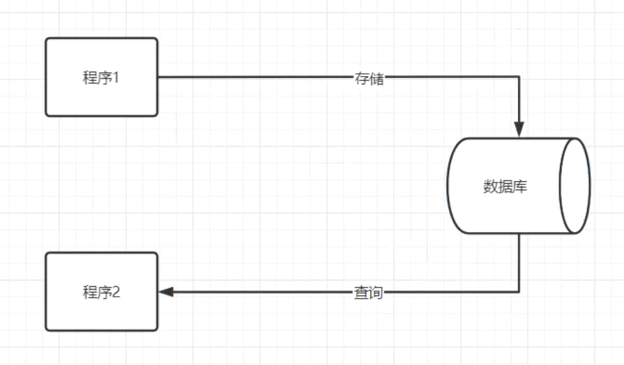.
关系型数据库与非关系型数据库
- 关系型数据库：
采用了关系模型来组织数据的存储，以行和列的形式存储数据并记录数据与数据之间的关系-->将数据存储在表格中，可以通过建立表格与表格之间的关联，来维护数据与数据之间的关系。
- 非关系型数据库：
采用键值对的模型来存储数据，只完成数据的记录，不会记录数据与数据之间的关系。
在非关系型数据库中基于特定的存储结构来解决一些大数据应用的难题
NoSQL（Not onlt SQL)数据库来指代非关系型数据库
常见的数据库产品
关系型数据库产品
MySQL 免费
- MariaDB
- Percona Server
PostgreSQL
Oracle 收费（功能最齐全）
SQL Server
Access
Sybase
达梦数据库
非关系型数据库产品
面向检索的列式存储
- HaBase （Hadoop子系统）
- BigTable （Google）
面向高并发的缓存存储 Key-Value
- Redis
- MemcacheDB
面向海量数据访问的文档存储
- MongoDB
- CouchDB
数据库术语
数据库（DataBase）：存储的数据的集合
数据（Data）：实际上指的是描述事物的符号记录仪
数据库管理系统（Database Management System，DBMS）：位于用户与操作系统之间的一层数据管理软件
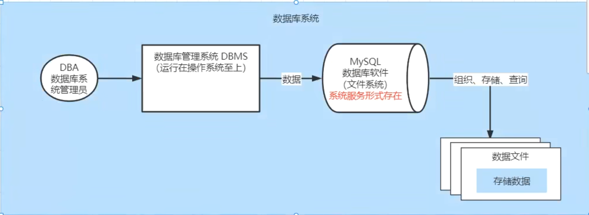
数据库管理员（Database Anministrator，DBA）：负责数据库创建、使⽤及维护的专⻔⼈员
数据库系统（Database System，DBS）：数据库系统管理员、数据库管理系统及数据库组成整个单元
MySQL环境
MySQL版本及下载
版本
- MySQL是Oracle的免费的关系型数据库，官网 https://www.mysql.com/
- 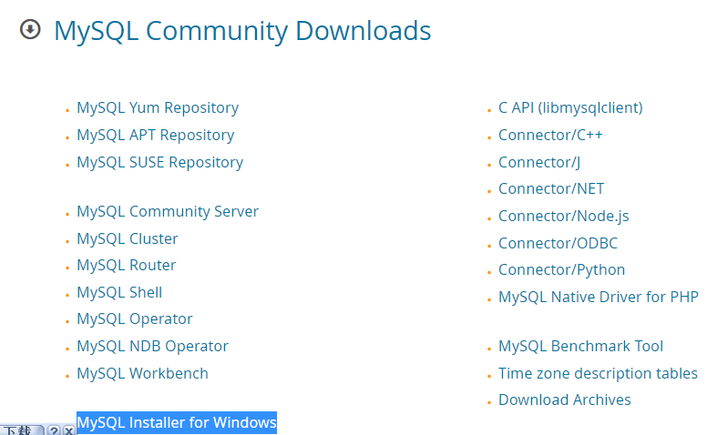.
在企业项目中主流版本：5.7 -- 8.0.26
MySQL 8.x新特性
- 性能：8.x比5.7数度快2倍
- 支持NoSQL存储：5.7开始提供了对NoSQL的⽀持，8.0.x做了更进⼀步的改进
- 窗⼝函数
- 索引：隐藏索引、降序索引
- 可⽤性、可靠性
下载
- 官网下载：https://dev.mysql.com/downloads/
- 镜像filehorse下载：https://www.filehorse.com/search?q=mysql
安装
傻瓜式（直接点击下一步）
安装类型选择
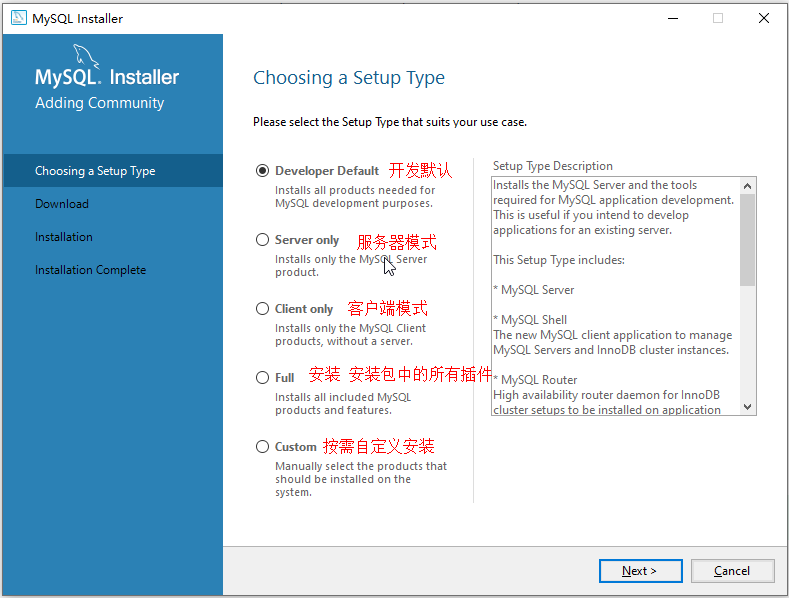.
若选择 Developer Default 模式安装
此模式会安装开发⼈员需要的常⽤组件；在安装这些组件时需要对应的环境依赖，我们要暂停，先去安装依赖的环境：
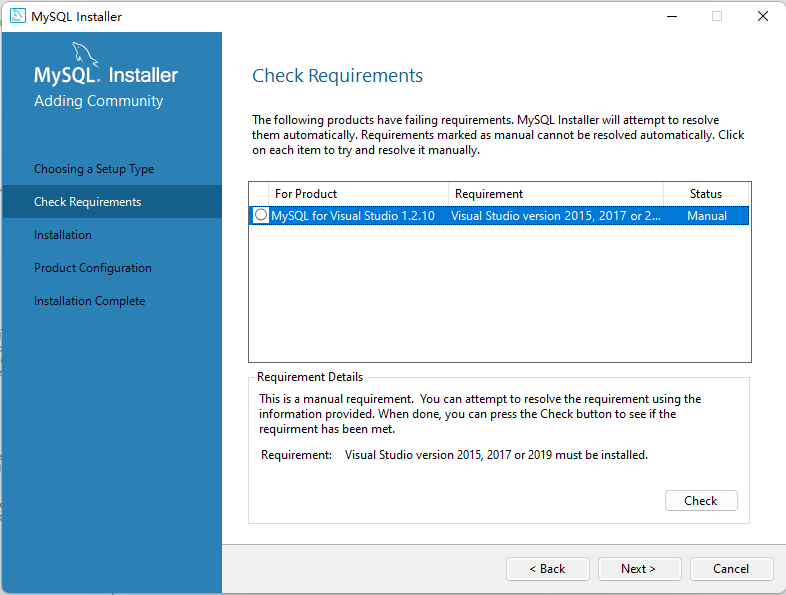.
安装visual studio时一定要勾选.net
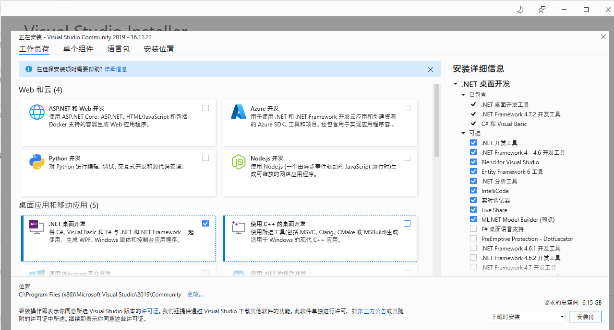.
选择⾃定义Custom 安装
只保留需要的插件
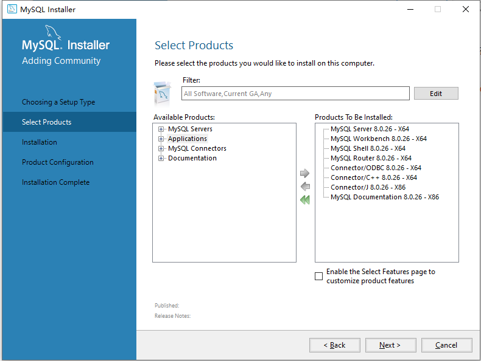.
MySQL配置
端口配置：3306
 .
.
账号密码设置
我的密码123456@
或123456
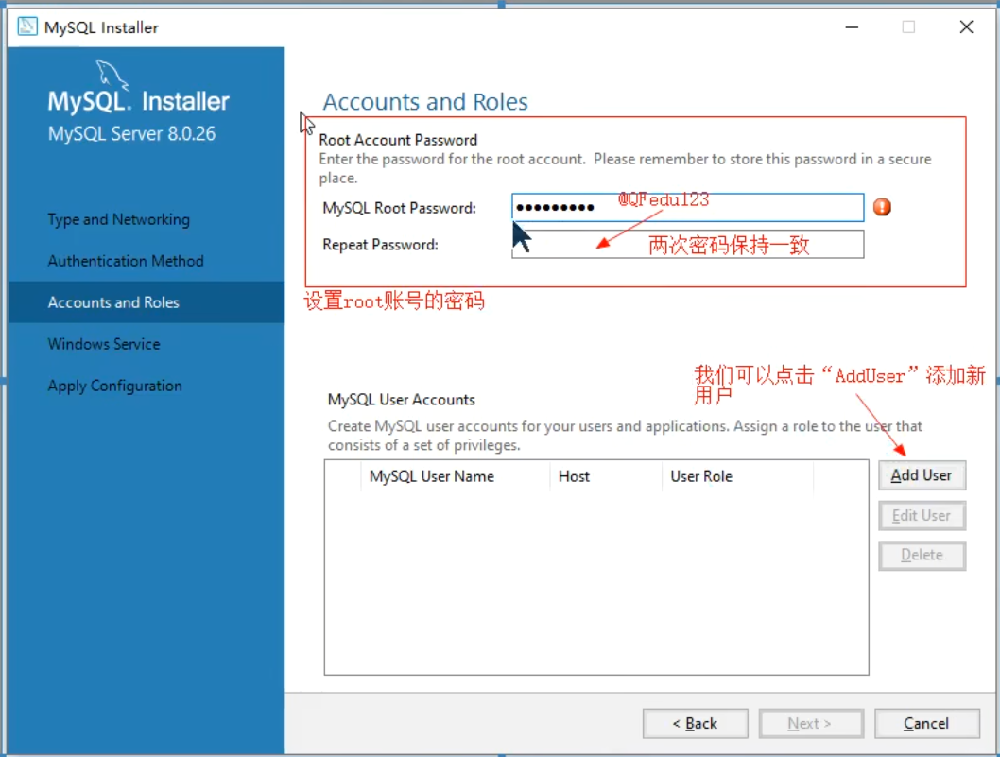.
服务名称设置
 .
.
结束
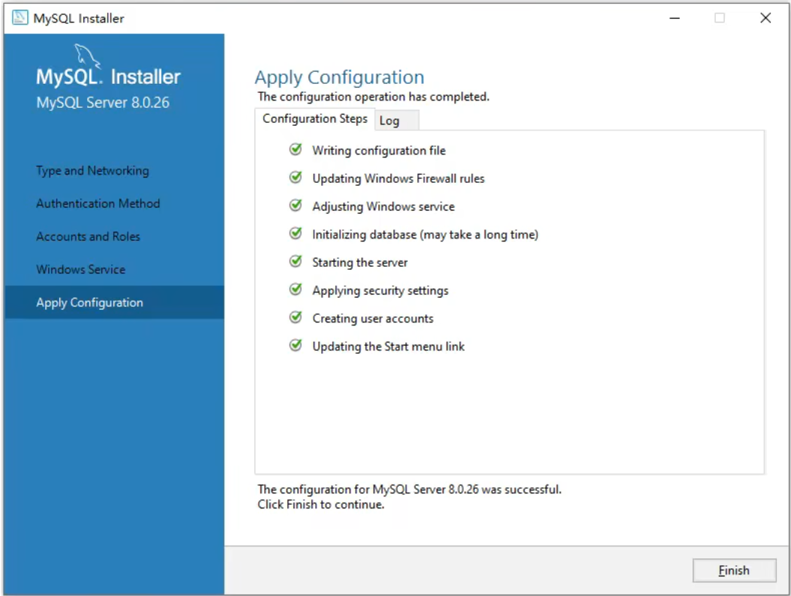.
MySQL服务的启动与停止
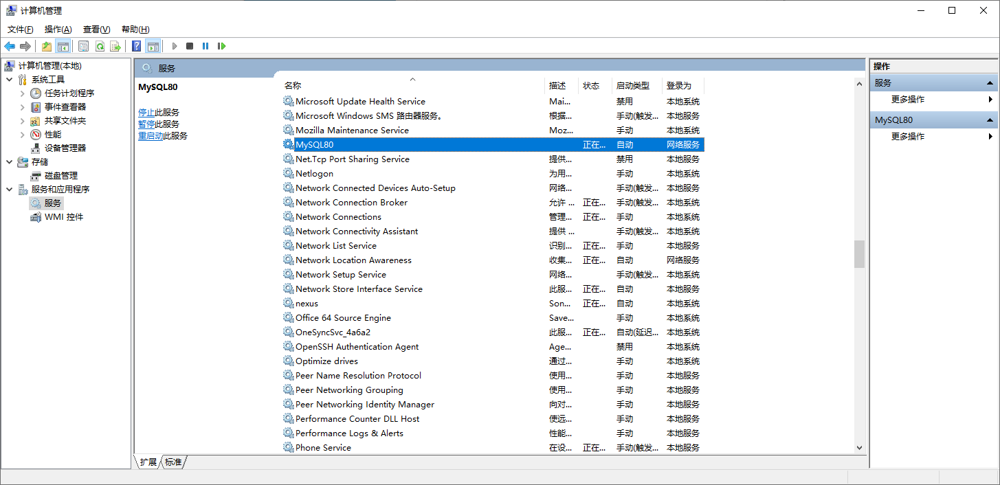
或
 .
.
MySQL卸载
关闭服务
卸载软件
- 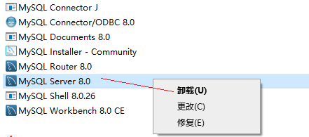.
删除目录
- MySQL的安装⽬录： C:\Program Files (x86)\MySQL
- MySQL的数据⽂件⽬录(默认隐藏)： C:\ProgramData\MySQL (如果不允许删除，强制删除)
删除注册表
- 打开注册表： win+r --- 输⼊regedit ---回⻋
- 删除 HKEY_LOCAL_MACHINE\SYSTEM\ControlSet001\Services\MySQL80
- 删除搜索mysql 的相关项（⾮必须）
MySQL的管理工具
⽤户是通过DBMS⼯具来对MySQL进⾏操作的
安装完成之后默认包含了管理工具mysql Commcand line Client，一命令行形式执行
通常我们会单独安装可视化的DBMS⼯具：
- SQLyog
- Navicat for MySQL
MySQL Command line Client使⽤
 .
.
- 打开MySQL Command line Client : 开始菜单 --- MySQL --- MySQL 8.0 Command line Client
- 连接MySQL : 输⼊密码即可 （如果密码错误或者mysql服务没有启动，窗⼝会闪退）
- 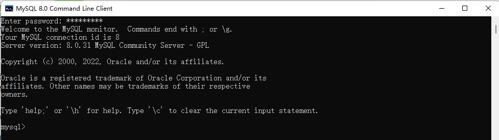.
可视化⼯具Navicat使⽤
Navicat⼯具下载及安装
傻⽠式安装
创建连接
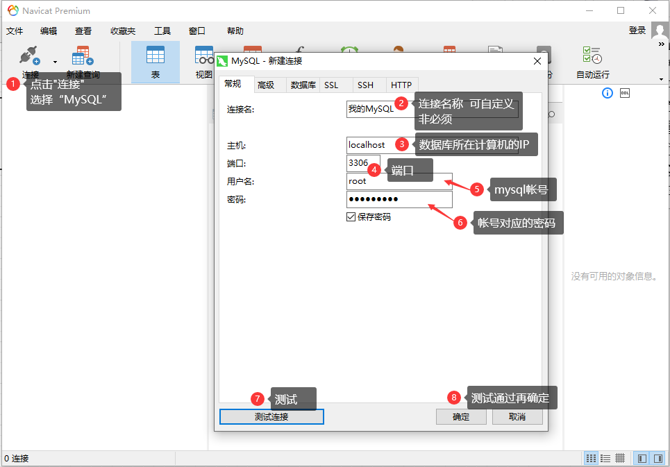.
MySQL逻辑结构
MySQL中的数据需要按照特定的结果进⾏存储
 .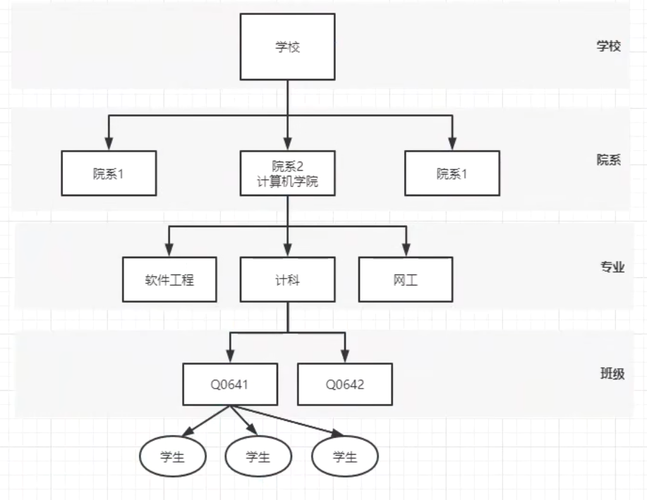.
.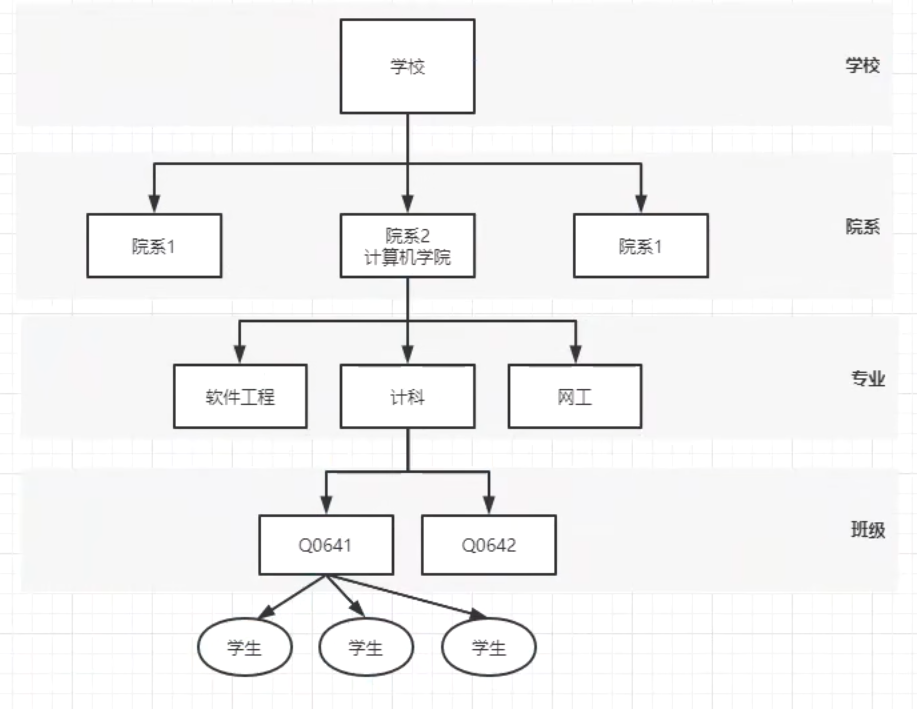.
记录/元组
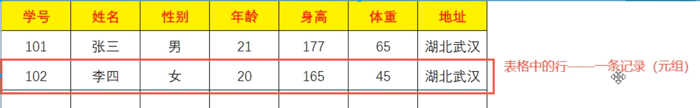
MySQL数据类型
指数据表中的列中支持春芳的数据的类型
数值类型
在MySQL中有多种数据类型可以存放数值，不同的类型存放的数值的方位或者形式是不同的
| 类型 | 内存大小 | 范围 | 说明 |
|---|---|---|---|
| tinyint | 1byte | 有符号 -128 ~ 127 ⽆符号 0 ~ 255 | 特⼩型整数（年龄） |
| smallint | 2byte （16bit） | 有符号 -32768 ~ 32767 ⽆符号 0 ~ 65535 | ⼩型整数 |
| mediumint | 3byte | 有符号 -2^31 ~ 2^31 - 1 ⽆符号 0 ~ 2^32-1 | 中型整数 |
| int/integer | 4byte | 整数 | |
| bigint | 8byte | ⼤型整数 | |
| float | 4byte | 单精度 | |
| double | 8byte | 双精度 | |
| decimal | 第⼀参数+2 | decimal(10,2) 表示数值⼀共有10位 ⼩数位有2位 |
整型中默认使用int，当int不够装使使用bigint，极少使用tinyint、smallint、mediumint
浮点型中默认使用double
字符串类型
存储字符序列的类型
| 类型 | 字符序列的长度范围 | 说明 |
|---|---|---|
| char | 0 ~ 255 字节 | 定长字符串，最多可以存储255个字符；当指定数据表字段为char(n) 此列中的数据最长为n个字符，如果添加的数据少于n，则补"\u0000"至n长度 |
| varchar | 0 ~65535 字节 | 可变长度字符串，此类型的类最大长度为65535， |
| tinyblod | 0 ~ 255 字节 | 存储二进制字符串 |
| blod | 0 ~ 65535 字节 | 存储二进制字符串 |
| mediumbold | 0 ~ 1677215 字节 | 存储二进制字符串 |
| longblod | 0 ~ 4694967295 字节 | 存储二进制字符串 |
| tinytext | 0 ~ 255 字节 | 文本数据（字符串） |
| text | 0 ~ 65535 字节 | 文本数据（字符串） |
| mediumtext | 0 ~ 1677215 字节 | 文本数据（字符串） |
| longtext | 0 ~ 4294967295 字节 | 文本数据（字符串） |
日期类型
可以使⽤字符串来存储时间，但是如果需要基于时间字段进⾏查询操作（查询在某个时间段内的数据）就不便于查询实现
| 类型 | 格式 | 说明 |
|---|---|---|
| date | 2021-09-13 | ⽇期，只存储年⽉⽇ |
| time | 11:12:13 | 时间，只存储时分秒 |
| year | 2021 | 年份 |
| datetime | 2021-09-13 11:12:13 | ⽇期+时间，存储年⽉⽇时分秒 |
| timestamp | 20210913 111213 | ⽇期+时间 （时间戳） |
SQL结构化查询语言
SQL概述
SQL（Structured Query Language）结构化查询语⾔，⽤于存取、查询、更新数据以及管理关系型数据库系统
SQL发展
SQL是在1981年由IBM公司推出，基于其简洁的语法成为主流数据库的通⽤规范
SQL由ANSI组织确定规范
在不同的数据库产品中遵守SQL的通⽤规范，但是也对SQL有⼀些不同的改进，形成了⼀些数据库的专有指令
- MySQL: limit
- SQLServer ： top
- Oracle：rownum
SQL分类
根据SQL指令完成的数据库操作的不同，可以将SQL指令分为四类：
DDL Data Definition Language 数据定义语⾔
- ⽤于完成对数据库对象（数据库、数据表、视图、索引等）的创建、删除、修改
DML Data Manipulation Language 数据操作/操纵语⾔
- ⽤于完成对数据表中的数据的添加、删除、修改操作
- 添加：将数据存储到数据表
- 删除：将数据从数据表移除
- 修改：对数据表中的数据进⾏修改
DQL Data Query Language 数据查询语⾔
- ⽤于将数据表中的数据查询出来
DCL Data Control Language 数据控制语⾔
- ⽤于完成事务管理等控制性操作
SQL语句不区分大小写
SQL基本语法
在MySQL Command Line Client 或者navicat等⼯具中都可以编写SQL指令
- SQL指令不区分大小写
- 每条SQL语句结束之后都以 ; 进行结尾
- SQL指令以 空格 进行分割
- SQL之间可以不限制换行（有空格的地方就可以有换行）
DDL数据库操作
DDL-数据库操作
使用DDL语句可以创建数据库、查询数据库、修改数据库、删除数据库
创建数据库 关键字：create
x
1mysql> create database <dbName>; # 创建数据库 dbName(数据库名)可以自定义 .
.
x
1mysql> create database if not exists <dbName>; # 创建一个数据库，当指定名称的数据库不存在时创建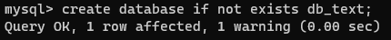.
x
1mysql> create database <dbName> character set utf8; # 创建一个数据库，并指定字符集（字符集：数据存储在数据库中采用的编码格式)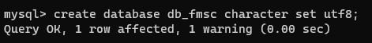.
删除数据库 关键字：drop
11mysql> drop database <dbName>; # 删除指定数据库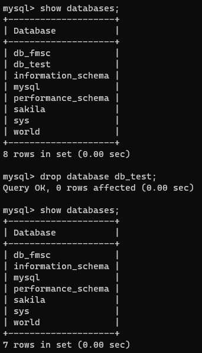.
11mysql> drop database if exists <dbName>; # 当指定数据库存在时删除该数据库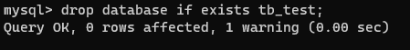.
修改数据库 关键字 alter
11mysql> alter database <dbName> character set gbk; #修改指定数据库的字符集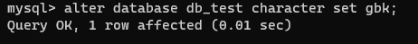.
查询数据库 关键字：show
11mysql> show databases; # 显示数据库列表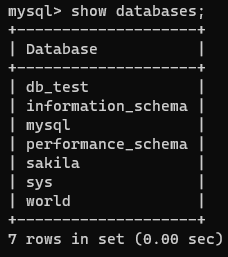.
11mysql> show create database <dbName>; # 显示指定数据库的创建的SQL指令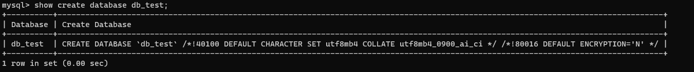
使用/切换数据库 关键字：use
11mysql> use <dbName> 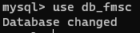.
DDL数据表操作
数据表是一个二维的表格，一个表格是由多列组成，表格中的每一列称为一个字段
数据类型
| char(num) | 不可变长度字符串 | num：长度 |
|---|---|---|
| varchar(num) | 可变长度字符串 | num：最大长度 |
| int | 整形 |
创建数据表 create
举例
xxxxxxxxxx131create table <table_name>(2 stu_num char(8) not null unique,3
4 stu_name varchar(20) not null,5
6 stu_gender char(2) not null,7
8 stu_age int not null,9
10 stu_tel char(11) not null unique,11
12 stu_qq varchar(11) unique13);注意：字段自建以逗号隔开，最后一个字段没有逗号
运行
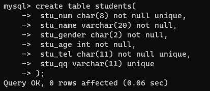.
 .
.
查询数据表
查询所有数据表 show
11mysql> show tables;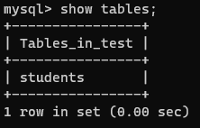.
查询数据表结构 desc
11mysql> desc <table_name>;删除数据表 drop
21mysql> drop table students; # 删除数据表2mysql> drop table if exists students; #如果数据表存在则删除表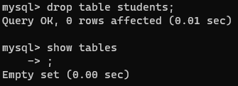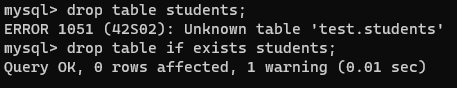
修改数据表 alter
修改数据表名 rename
11mysql> alter table <table_name> rename to <new_table_name>;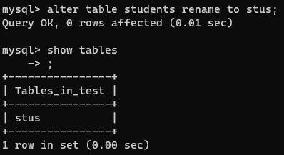.
修改数据表字符集 character set
数据表默认字符集与数据库一致
11mysql> alter table <table_name> character set 字符集; .
.
添加字段 add
11mysql> alter table <table_name> add <字段名> <数据类型>;修改字段名字与类型 change
11mysql> alter table <table_name> change <字段名> <新字段名> <新字段类型>;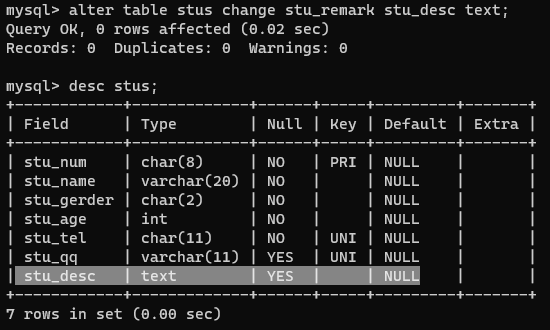.
修改字段类型 modify
11mysql> alter table <table_name> modify <字段名> <新的字段类型>;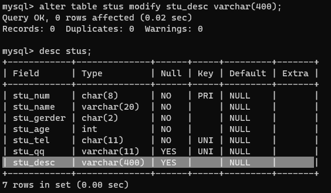.
删除字段 drop
11mysql> alter table <table_name> drop <字段名>;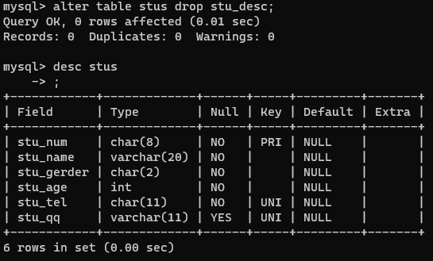.
字段约束
简介
在创建数据表的时候，指定的对数据表的列的数据限制性的要求（对表的列中的数据进行限制）
原因
- 保证数据的有效性
- 保证数据的完整性
- 保证数据的正确性
常见的字段约束
- 非空约束（not null）：限制此列的值必须提供，不能为null
- 唯一约束（unique）：在表中的多条数据，此列的值不能重复
- 主键约束（primary key）：非空+唯一，能够唯一标识数据表中的一条数据
- 外键约束（foreign key）：建立不同表之间的关联关系
非空约束
简介：限制数据表中此列的值必须提供
 .
.
创建数据表books
xxxxxxxxxx61mysql> create table books(2-> book_isbn char(4),3-> book_name varchar(10) not null, # 设置图书表4-> book_author varchar(6)5-> );6
添加值
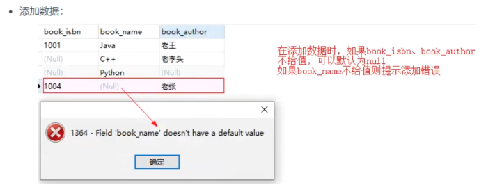.
唯一约束
简介
在表中的多条数据，此列的值不能重复
实践
- 创建表：设置图书表的book_isbn为unique
51mysql> create table books(2 -> book_isbn char(4) unique,3 -> book_name varchar(10) not null,4 -> book_author varchar(6)5 -> );添加值
- 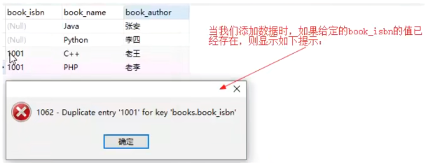.
主键约束
简介:使用频率较低
能够唯一标识数据表中的一条数据
在一张表中只能有一个主键（主键可以是一个列，也可以是多个列的组合）
当一次字段声明为主键之后，添加数据时：
- 此字段不能为null
- 此字段数据不能重复
创建主键的方法
创建表时定义组件
xxxxxxxxxx51create table books(2book_isbn char(4) primary key,3book_name varchar(10) not null,4book_author varchar(6)5);或者
xxxxxxxxxx61create table books(2book_isbn char(4) ,3book_name varchar(10) not null,4book_author varchar(6),5primary key(book_isbn)6);
创建表之后添加主键约束
x
1alter table books modify book_isdn char(4) primary key
删除数据表主键约束
x
1alter table books drop primary key主键数据增长
作用：
在我们创建⼀张数据表时，如果数据表中有列可以作为主键（例如：学⽣表的学号、图书表的isbn）我们可以直接这是这个列为主键；
当有些数据表中没有合适的列作为主键时，我们可以额外定义⼀个与记录本身无关的列（ID）作为主键，此列数据⽆具体的含义主要⽤于标识⼀条记录，在mysql中我们可以将此列定义为int，同时设置为自动增⻓ ，当我们向数据表中新增⼀条记录时，⽆需提供ID列的值，它会⾃动⽣成。
例如：
定义：
11定义int类型字段⾃动增⻓： auto_increment .
.
注意：自动增长从1开始，每添加一条记录，自动增长的列会自动+1，当我们把某条记录删除之后再添加数据，⾃动增⻓的数据也不会重复⽣成（⾃动增⻓只保证唯⼀性、不保证连续性）
联合主键
简介
将数据表中的多列组合在⼀起设置为表的主键
将两列的值同时确定时，可以在表中确定唯一的记录
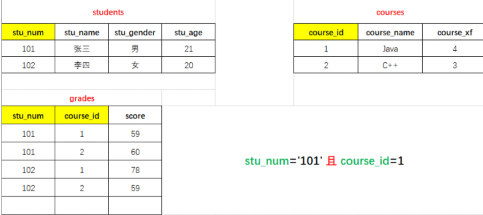.
定义
xxxxxxxxxx1create table grades(2 stu_num char(8),3 course_id int,4 score int,5 primary key(stu_num,course_id)6);外键约束
多表关联部分
DML数据操纵语言
插入数据
语法
xxxxxxxxxx11insert into <tableName>(columnName,columnName . . . . . ) values();示例
数据表结构
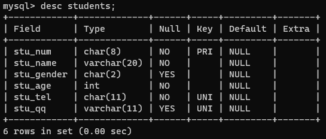.
向数据表中指定的列添加数据，（不允许为空的列必须添加数据）
 .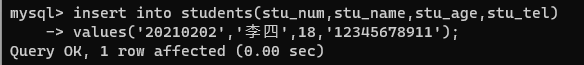
.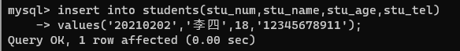
添加数据时列的顺序可以不与数据表保持一致（但是values中值的顺序必须一致）
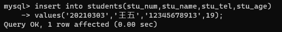.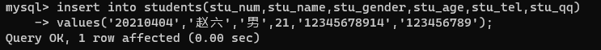
当给表中所有字段添加数据时，后面的字段列表可以省略，但是values中的值的顺序要与数据表定义的字段保持一致；
不过在项目开发中，即使要想所有列添加数据，也建议将列名的列表显式写出来（增强SQL的稳定性）
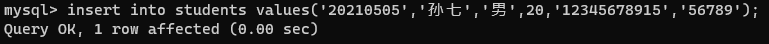.
结果
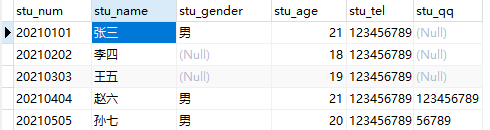.
删除数据
作用
从数据表中删除满足特定条件（所有）数据
语法
xxxxxxxxxx11delet from <tableName> ; (删除整张表的数据)xxxxxxxxxx11delet from <tableName> where conditions;(删除满足特定条件的数据)
示例
当前数据表数据
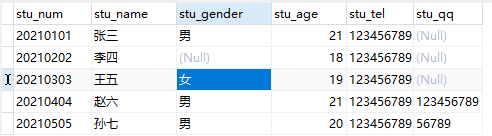.
删除数据表中 stu_num='20210201'的数据
 .
.
删除后数据表数据
 .
.
删除数据表中 stu_age>20的数据删除数据表中 stu_age>20的数据
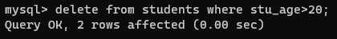.
删除后数据表数据
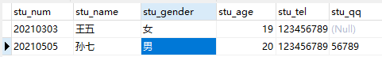.
修改数据
作用
对数据表中已添加的记录进行修改
语法
xxxxxxxxxx21update <tableName> set columnName=value(修改整列)2update <tableName> set columnName=value where conditions(修改符合条件的数据)示例
当前数据表
 .
.
将学号为20210105的学生姓名修改为“孙七”
 .
.
修改后的数据表
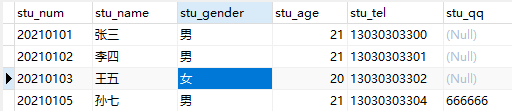.
将学号为20210103的学生 性别修改为'男'，同时将QQ修改为'7777777'（修改多列）
修改多个字段中间用 , (英文逗号)隔开
 .
.
修改后的数据表
 .
.
根据主键修改其他所有列根据主键修改其他所有列
 .
.
修改后的数据表
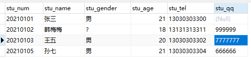.